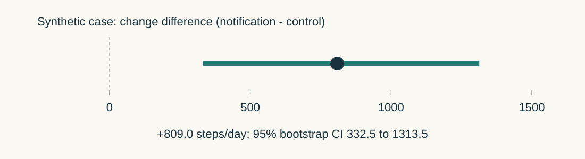

질문 하나가
파일이 되는 과정.
알림이 걸음수를 바꾸는지 묻고, 근거·숫자·문장을 차례로 확인합니다.
대학생에게 걷기 앱 알림을 보내면 4주 후 일평균 걸음수가 늘까?
대학생 40명이라는 합성 설정에서, 같은 걷기 앱에 알림을 더했을 때 4주 변화량을 비교합니다.
| 대상 | 합성 학생 40명 |
|---|---|
| 비교 | 하루 2회 알림 / 같은 앱, 알림 없음 |
| 결과 | 일평균 걸음수 변화(추적 − 기준) |
내 예상: 차이가 보여도 ‘건강이 좋아졌다’고 말할 수 있을까?
실제 원문과 합성 결과를 구별합니다.
SMART MOVE 원문은 일차의료 성인의 8주 스마트폰 앱 연구입니다. 대학생에게 알림만 보낸 효과를 증명한 논문으로 바꿔 쓰지 않습니다.
| 주장 | 확인할 곳 | 판정 |
|---|---|---|
| 앱 기반 보행 연구가 수행됐다 | 원문의 Methods·대상·중재 | 배경 근거 후보 |
| 강의 자료의 평균 차이 +809.0 | CSV → 코드 → result.json | 합성 사례 계산값 |
| 모든 대학생의 건강 개선 | 해당 측정·추적이 없음 | 지지하지 못함 |
AI의 암산 대신 실행 결과를 엽니다.
실제 Python 실행값입니다. 화면 설명은 준비된 교육용 문장입니다.

알림군(n=20)의 일평균 걸음수는 기준 6,310.5±1,184.5에서 추적 6,894.5±1,883.6로, 대조군(n=20)은 6,462.5±1,386.8에서 6,237.5±1,589.2로 변하였다(평균±SD, 걸음/일). 변화량(추적−기준)은 알림군 +584.0±968.6, 대조군 -225.0±624.5였고, 사전에 정한 1차 결과인 변화량의 군 간 평균 차이(알림군−대조군)는 +809.0걸음(95% CI 332.5~1,313.5, 부트스트랩 백분위법 B=10,000; 순열 검정 p=0.003)이었다. 모든 수치는 교육용 합성 자료에서 계산한 값이다.
문장이 매끄러운지보다, 뜻이 커졌는지.
먼저 고칠 곳을 찾아보세요.
본 연구는 걷기 앱 알림이 대학생의 신체활동을 유의하게 증진시켜 건강을 개선함을 입증하였다. 알림군은 대조군보다 일평균 809.0걸음 더 많이 걸었으며, 이 효과는 지속될 것으로 기대된다. 따라서 모든 대학생에게 알림 기반 개입을 적용할 수 있음을 시사한다.
수정본
이 교육용 합성 자료에서, 4주 동안 하루 2회 알림을 받은 알림군(n=20)의 일평균 걸음수 변화는 대조군(n=20)보다 평균 +809.0걸음 더 컸다(95% 신뢰구간 332.5~1,313.5, 부트스트랩). 측정한 결과는 걸음수만이므로 건강 결과에 대해서는 말할 수 없고, 4주 이후의 유지 여부와 다른 대학·연령의 학생에 대한 일반화도 이 자료의 범위를 넘는다. 이 자료는 교육용 합성 데이터이므로 실제 효과에 대한 근거가 아니다.
측정하지 않은 건강, 추적하지 않은 미래, 연구하지 않은 전체 학생에 대한 표현을 줄였습니다. 수치와 분석 방법은 결과 파일에서 다시 확인합니다.
수용·기각·이유 기록 보기‘만들었다’면 실제 파일을 확인합니다.
아래는 코드로 생성하고 문장 일치·파일 해시를 확인한 교육용 묶음입니다. 특정 저널의 형식 검사를 통과한 파일은 아닙니다.